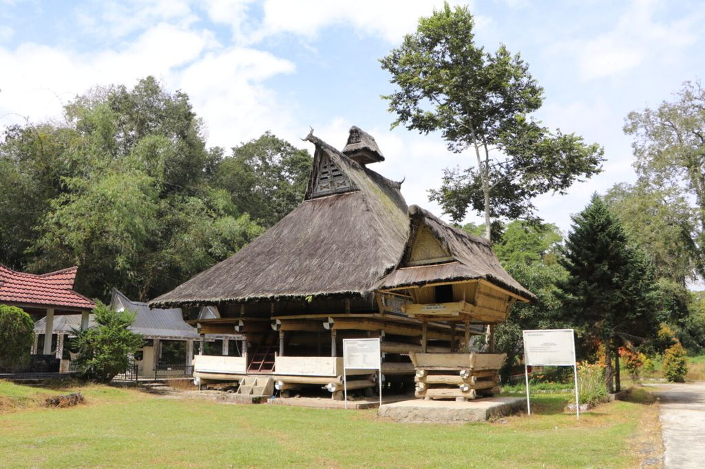

Rumah Bolon Pamatang Purba merupakan salah satu rumah bolon (rumah tradisional) Batak Simalungun yang pernah menjadi kediaman keluarga penguasa Partuanan Purba di daerah Simalungun, Sumatera Utara.
|
 |
Rumah Bolon Pamatang Purba memiliki bentuk yang sangat khas dan mudah dikenali. Struktur utama rumah ini terbuat dari kayu, dengan atap yang melengkung ke atas menyerupai bentuk perahu terbalik, yang dikenal sebagai atap "sada" dalam bahasa Batak. Atap ini memiliki beberapa lapisan, yang dirancang untuk melindungi rumah dari hujan dan panas matahari. Bagian depan rumah sering dihiasi dengan ukiran-ukiran yang menggambarkan motif-motif adat Batak, seperti gambar-gambar binatang dan pola geometris.
Rumah ini dibangun di atas tiang-tiang tinggi, yang tidak hanya berfungsi untuk melindungi dari kelembapan tanah, tetapi juga untuk melindungi dari hewan liar. Struktur rumah ini juga dibagi menjadi beberapa ruang, dengan ruang utama yang digunakan untuk kegiatan sehari-hari dan ruang-ruang tambahan untuk keluarga dan tamu. Ruang di dalam rumah sering dibagi berdasarkan fungsi dan status sosial, dengan area yang lebih tinggi biasanya digunakan oleh anggota keluarga yang lebih penting atau tamu kehormatan.
Rumah Bolon Pamatang Purba adalah contoh khas dari rumah adat Batak Toba yang telah ada sejak zaman dahulu. Rumah ini berfungsi sebagai tempat tinggal dan pusat kegiatan sosial serta adat bagi masyarakat Batak Toba. Pamatang Purba terletak di desa-desa sekitar Danau Toba, yang merupakan daerah asli suku Batak Toba. Rumah ini mencerminkan struktur sosial dan hierarki masyarakat Batak Toba, di mana rumah-rumah besar seperti Pamatang Purba biasanya dimiliki oleh keluarga-keluarga terpandang dan bangsawan. Rumah ini juga menjadi tempat pelaksanaan upacara adat, termasuk perayaan pernikahan dan ritual keagamaan.
Rumah Adat Batak Simalungun memiliki arsitektur yang unik, berbentuk rumah panggung dan dibangun menggunakan bahan-bahan bangunan yang terdiri dari kayu dengan tiang-tiang yang besar dan kokoh. Dindingnya dari papan atau tepas.Lantainya juga dari papan, sedangkan atapnya terbuat dari ijuk atau daun rumbia. Rumah adat ini juga tidak menggunakan paku, tapi diikat kuat dengan menggunakan tali.Rumah Adat Batak Simalungun memiliki kolong yang tingginya sekitar dua meter. Kolong tersebut biasanya dipergunakan untuk memelihara hewan, seperti babi, ayam, dan sebagainya. Oleh karena itu disediakan tangga untuk masuk ke dalam rumah.Pintu rumah ini memiliki kemiripan dengan rumah adat batak lainnya, yaitu pintu yang pendek sehingga tamu harus menunduk untuk masuk ke dalam rumah. Hal ini menandakan bahwa tamu harus menghormati pemilik rumah. Ciri khas utama dari rumah adat ini terdapat pada bagian bawah atau kaki bangunan. Kaki bangunannya selalu berupa susunan kayu yang masih bulat-bulat atau gelondongan. Kayu-kayu tersebut menyilang dari sudut ke sudut. Ciri khas lainnya adalah bentuk atap pada anjungan yang diberi limasan berbentuk kepala kerbau lengkap dengan tanduknya.Salah satu tempat untuk melihat Rumah Adat Batak Simalungun adalah di Kota Pematang Siantar. Tepatnya di di Jalan Sudirman, Pematang Siantar. Di sini terdapat bangunan Museum Simalungun yang berbentuk Rumah Adat Simalungun